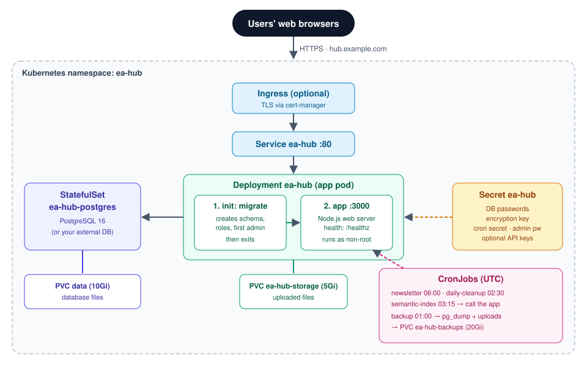

EA-Hub self-hosted — deployment guides (English)¶
EA-Hub runs anywhere that can run a Linux container and a PostgreSQL 16 database. Pick the guide that matches where you want to run it. Each guide is self-contained, from requirements to a signed-in admin.
All guides in one document: PDF · Word
| Where you want to run it | Best for | Guide |
|---|---|---|
| Docker on one machine (laptop, office server, cloud VM) | Trying it out, small teams, simplest operations | deploy-docker.md |
| Local Kubernetes (Docker Desktop, kind, minikube, k3s) | Learning, testing the Helm chart on your own computer | deploy-kubernetes-local.md |
| Any Kubernetes cluster (Helm chart or plain YAML) | On-premises clusters, AKS / EKS / GKE / DOKS… | deploy-kubernetes.md |
| Red Hat OpenShift / OKD | Enterprises standardised on OpenShift | deploy-openshift.md |
| Rancher (RKE2 / k3s clusters managed by Rancher) | Teams that manage clusters through Rancher | deploy-rancher.md |
| Azure Container Apps | Serverless containers on Azure | deploy-azure-container-apps.md |
| AWS ECS on Fargate | Serverless containers on AWS | deploy-aws-ecs-fargate.md |
| Google Cloud Run | Serverless containers on Google Cloud | deploy-google-cloud-run.md |
One-click cloud templates (Azure Bicep with a "Deploy to Azure" button, AWS CloudFormation, Google Cloud Terraform): deploy/cloud.
Several environments with GitOps (Argo CD, Rancher Fleet; staging and production values): deploy/gitops.
Server status: the admin console's Settings → Application health page shows the version, database, migrations, storage, e-mail, SSO, jobs, metrics and search status.
No internet access? Every release includes offline bundles (ea-hub-airgap-<version>-<arch>.tar.gz) with all images, the chart and the Compose files: selfhost/airgap.
Verify a release:
- The image is signed with cosign.
- It has SLSA build provenance: gh attestation verify oci://ghcr.io/e20e-tools/ea-hub-selfhost:<version> --repo E20E-Tools/ea-hub-selfhost.
- An SPDX SBOM is attached to every GitHub Release.
Single sign-on (Microsoft Entra ID, Keycloak, Okta, Google…) works on every platform: see single-sign-on.md.
What every installation is made of¶

| Part | Docker / Kubernetes / OpenShift / Rancher | Container-as-a-Service (Azure, AWS, Google) |
|---|---|---|
| Web app | container ghcr.io/e20e-tools/ea-hub-selfhost |
same container |
| Database | PostgreSQL 16 container with a volume | the provider's managed PostgreSQL 16 |
| Database setup | migrate service / init container |
MIGRATE_ON_START=true on the app |
| Uploaded files | a volume / PVC at /data/storage |
a network file share mounted at /data/storage |
| HTTPS | Caddy (Docker), Ingress or Route | built into the platform |
| Daily jobs | cron service / CronJobs |
the platform's scheduled jobs |
| Backups | backup service / CronJob |
managed database backups + file-share snapshots |
Requirements common to all guides¶
- A container image. Released versions are published at
ghcr.io/e20e-tools/ea-hub-selfhost:<version>. You can also build it yourself from this repository withdocker build -t <your-registry>/ea-hub-selfhost:<tag> .. - PostgreSQL 16 or newer. The built-in one, or a managed service.
- Persistent storage for uploaded files (5 GB is plenty to start with).
- An address people will use, e.g.
https://hub.example.com. The app must be told this exact address (APP_URL/appUrl). - The first admin's e-mail address and a password of at least 10 characters.
- Optional: an SMTP account (password reset, notifications), an OpenAI key (search by meaning), Cloudflare Turnstile keys (bot protection). Each feature switches itself on only when its key is set.
Minimum resources for the whole system: 2 vCPU, 4 GB RAM, 20–35 GB disk. The details are in each guide.
Settings reference¶
All guides use the same settings, under two names: environment variables (Docker and cloud) or Helm values.
| Environment variable | Helm value | Meaning |
|---|---|---|
APP_URL |
appUrl |
Public address of the site (no trailing slash) |
APP_ENCRYPTION_KEY |
secrets.appEncryptionKey |
Root secret, 32+ random characters. Never change it after the first start |
CRON_SECRET |
secrets.cronSecret |
Secret the scheduled jobs send to the app |
DATABASE_URL or DB_HOST, DB_PORT, DB_NAME, APP_DB_USER, APP_DB_PASSWORD |
handled by the chart | How the app connects to PostgreSQL |
DB_SSLMODE |
externalDatabase.sslmode |
require for most managed databases |
POSTGRES_PASSWORD / DATABASE_ADMIN_URL |
secrets.postgresPassword |
Admin connection used only to prepare the database |
MIGRATE_ON_START |
– | true: prepare the database when the app starts (cloud platforms) |
ADMIN_EMAIL, ADMIN_PASSWORD |
admin.email, admin.password |
First admin, created once |
STORAGE_DIR |
– | Where uploads are stored (default /data/storage) |
TRUST_PROXY_HOPS |
trustProxyHops |
Proxies in front of the app that append to X-Forwarded-For (default 1) |
SMTP_HOST, SMTP_PORT, SMTP_SECURE, SMTP_USER, SMTP_PASSWORD, SMTP_FROM |
smtp.* |
Outgoing e-mail |
OPENAI_API_KEY, TURNSTILE_SITE_KEY, TURNSTILE_SECRET_KEY, GROQ_API_KEY |
features.* |
Optional features |
OIDC_* |
sso.oidc.* |
Single sign-on, see single-sign-on.md |
STORAGE_BACKEND, S3_* |
storage.backend, storage.s3.* |
Uploads on a volume (default) or in an S3-compatible bucket |
METRICS_TOKEN |
metrics.enabled |
Prometheus metrics at /metrics |
Health check for any platform: GET /healthz returns {"ok":true,"database":"ok"}.